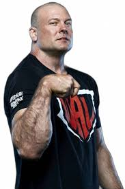
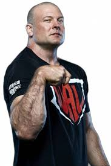
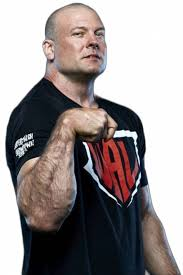

Devon Larratt, known as “No Limits,” is a Canadian arm-wrestling champion and ex-former special forces soldier. Born in 1975, he’s famous for having one the biggest bicepz, forearms and being one of nthe strongest man on the world. His 2008 win over John Brzenk (one of the best armwrestlers in history), and multiple world titles. Charismatic and resilient, he’s a key figure in popularizing arm wrestling worldwide.
